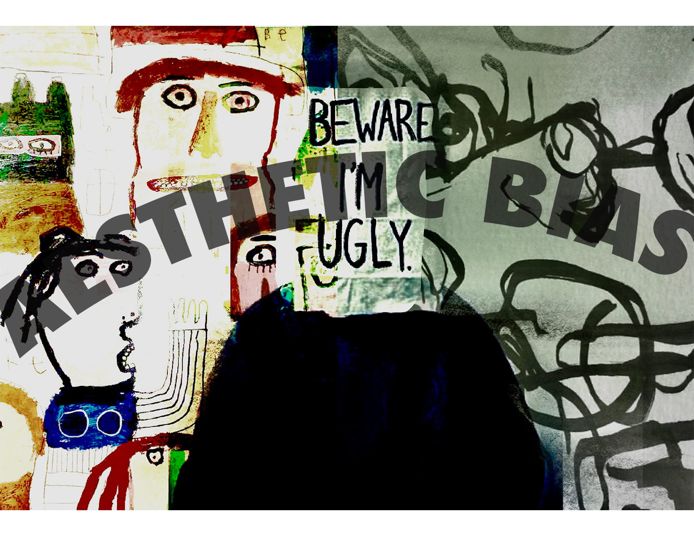
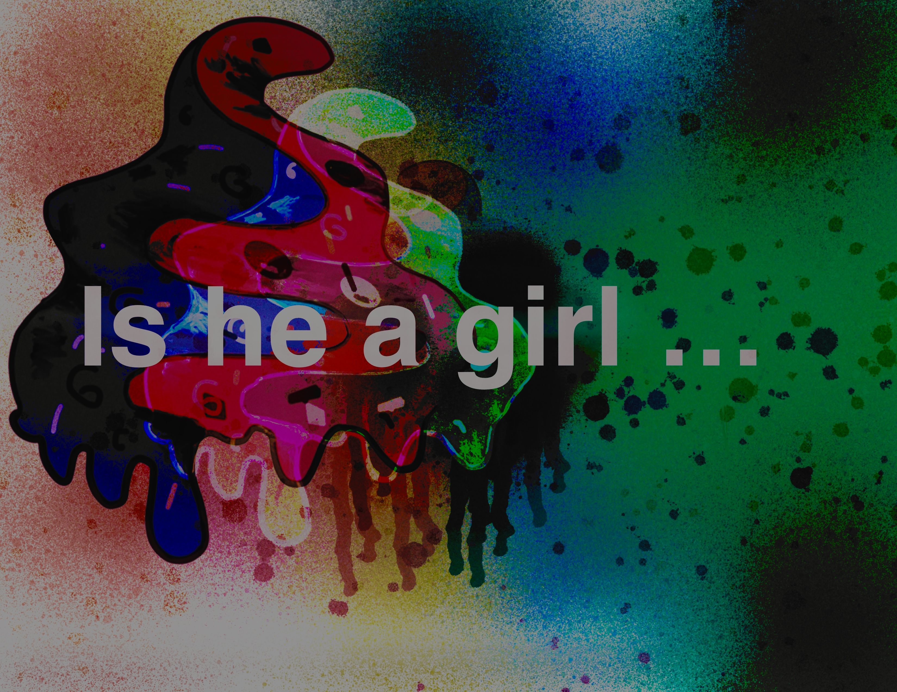
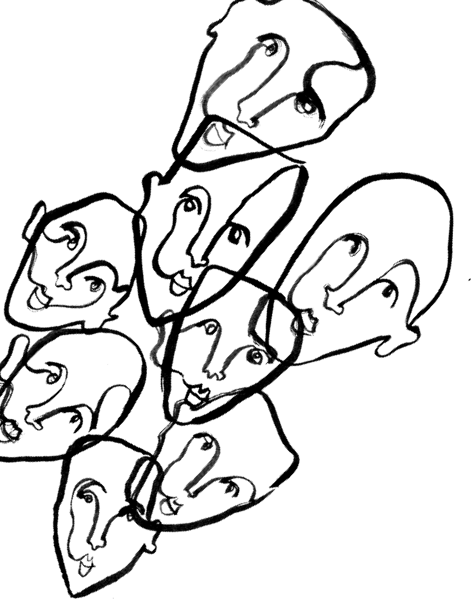
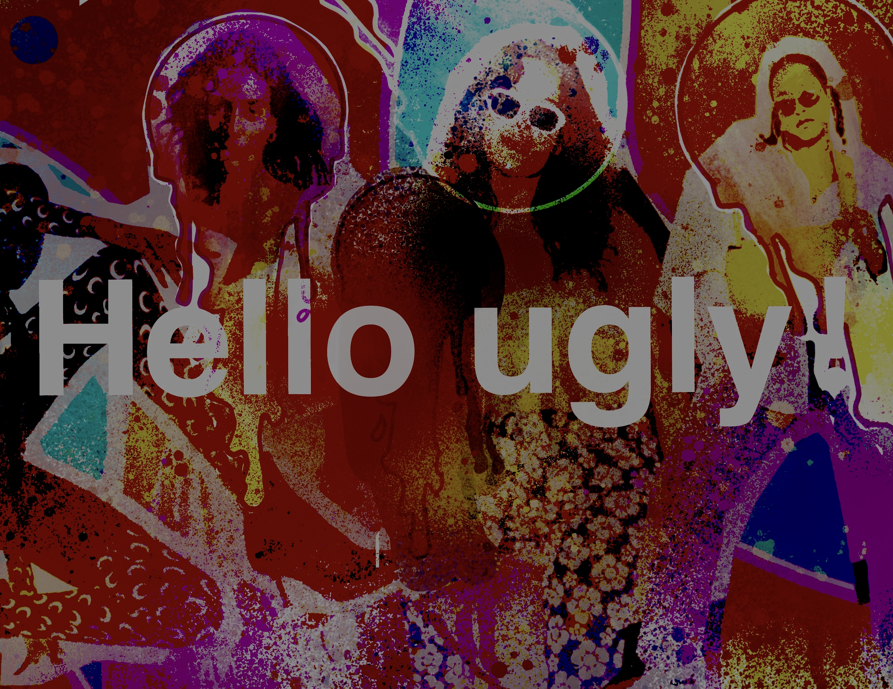
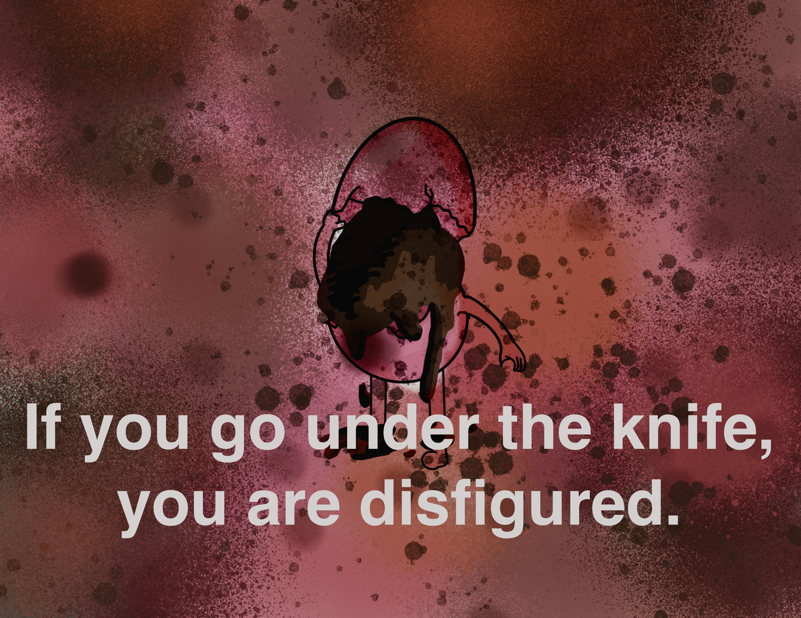
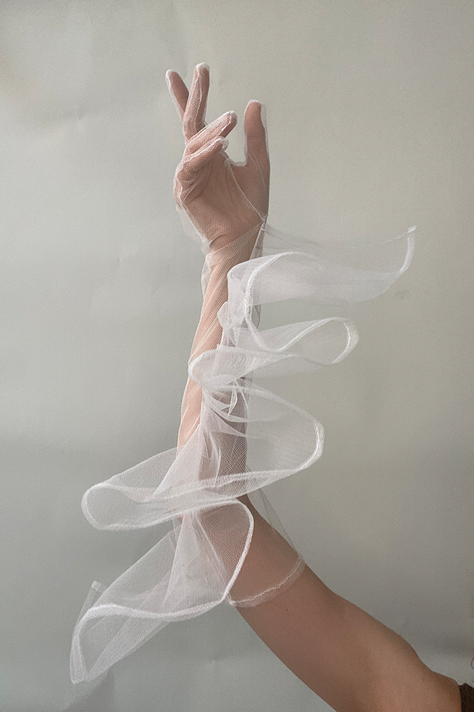
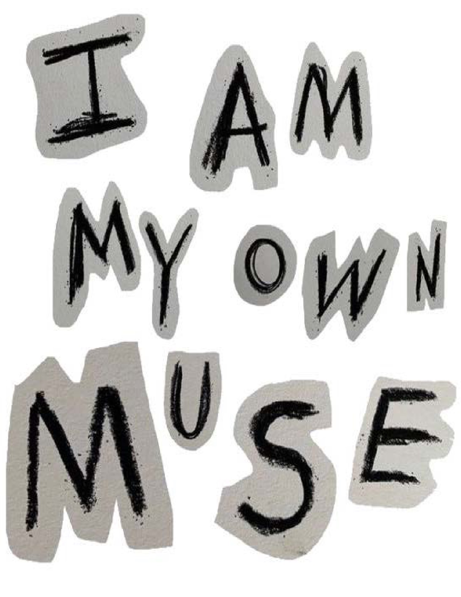
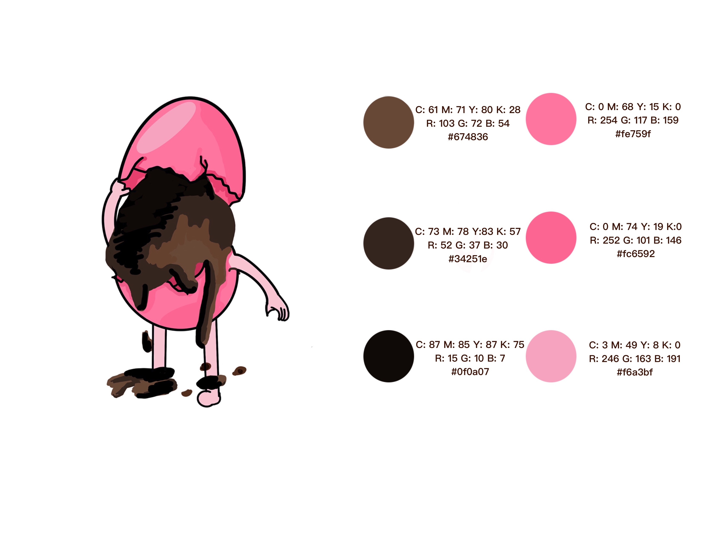
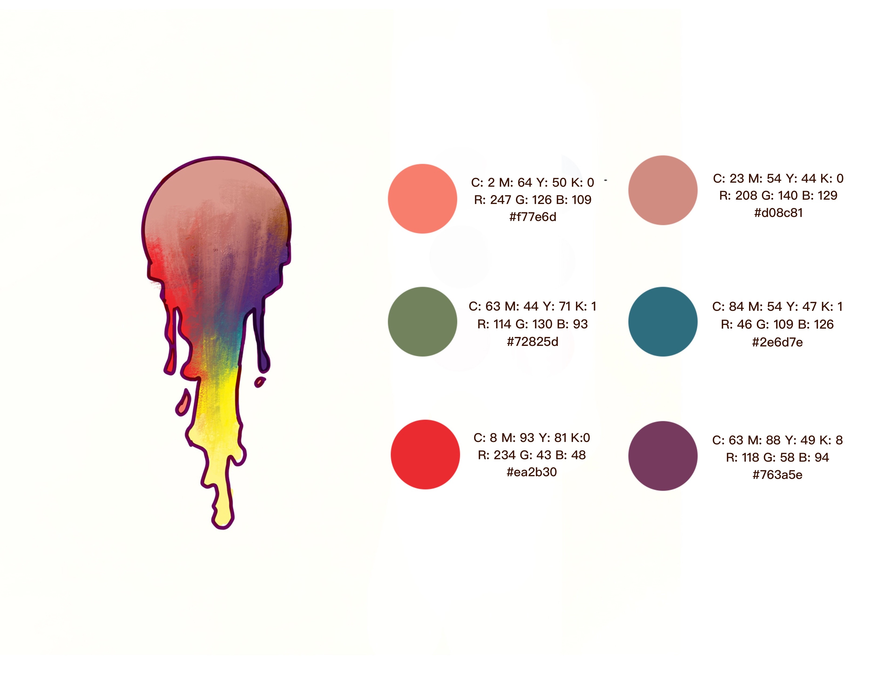

<!-- <!DOCTYPE html>
 
    <body>
        <div id="container">
        </ima> </div>
        <div class="t"></ima>
        </div>
       
       
        <div class="g"></ima>
        </div>
        <div class="a">
          
        </div>
        <div class="d">
          <p> </p>
        </div>
        <div class="b">
          
        </div>
        <div class="c"> -->
          <!-- </ima>
        </div>
        <div class="v">
          </ima>
        </div>
        <div class="s">
          </ima>
        </div>
        <div class="e">
          
        </div>
        <div class="h"></ima>
        </div>
        <div class="f">
          </ima>
        </div>
        <div class="y">
          
        </div>
        <div class="u"></ima>
        </div>
        <div class="i"></ima></div>
        <div class="r">
           -->
        <!-- </div>
        <style>
          ul {
            list-style-type: none;
            margin: 0;
            padding: 0;
            position: absolute;
            top:9000px;
            
          }
          li a {
  display: block;
  width: 60px;
  background-color: #a62f2f;
}
          </style>
          </head> -->
          <!-- <body>
          
          <p>In this example, we remove the bullets from the list, and its default padding and margin.</p>
          
          <ul>
            <li><a href="#home">What is Aesthetic Bias?</a></li>
            <li><a href="#news">How our mind shape our perspectives of Beauty?</a></li>
            <li><a href="#contact">Are you being Biased without knowing?</a></li>
            <li><a href="#about">Do I have an Aesthetic?</a></li>
          </ul>
          
       
        
        
       
        

        <html>
  <head>
    -->
    
          <link rel="stylesheet" type="text/css" href="GRPH.css">
          
      
  </head>
  <body>
    
</html>


 

<style></style>

</body>
</html>
<!-- <iframe </ima> 
            frameborder="0" 
            marginheight="0" 
            marginwidth="0" 
            width="100%" 
            height="100%" 
            scrolling="auto">
  </iframe> -->
  <iframe id="iframe" width="100%" </ima> 
        ></iframe> 

        <!DOCTYPE html>
        <html>
        <head>
        <style>
        div.gallery {
          margin: 5px;
          border: 1px solid #ccc;
          float: left;
          width: 500px;
        }
        
        div.gallery {
          border: 1px solid #777;
          position: relative;
          left: 100px;
          
        }
        
        div.gallery img {
          width: 100%;
          height: auto;
        }
        div.desc {
  padding: 100px;
  text-align: center;
}

</style>
</head>
<body>

<div class="gallery">
  <a target="_blank" href="15.jpg">
    
  </a>
  <div class="desc"><p>Check out this interesting article about the dangers of our bias:</p>
    <a href="https://www.aspenideas.org/articles/the-dangers-of-our-bias-towards-beauty">The Dangers of Our Bias Towards Beauty</a>
  </div>
  
</div>

<div class="gallery">
  <a target="_blank" href="2.jpg">
    
  </a>
  <div class="desc"><p>Check out this article on the biases of beauty:</p>
    <a href="https://journals.lww.com/prsgo/fulltext/2017/10000/the_idea_of_beauty_and_its_biases__critical_notes.19.aspx">The Idea of Beauty and Its Biases</a></div>
</div>
<div class="gallery">
  <a target="_blank" href="16.jpg">
    
  </a>
  <div class="desc"><p>Check out this article about culture influences:</p>
    <a href="https://link.springer.com/article/10.1007/s40167-018-0062-6">Cultural differences in lateral biases on aesthetic judgments</a></div>
</div>

<div class="gallery">
  <a target="_blank" href="10.jpg">
    
  </a>
  <div class="desc"><p>Check out this article about Diversity of Beauty:</p>
    <a href="https://iep.utm.edu/aesthetic-taste/">Aesthetic Tastes</a></div>
</div>
<link href="https://fonts.googleapis.com/css?family=Impact&display=swap" rel="stylesheet">
<h1>Are you being Biased without knowing?</h1>
<link href="https://fonts.adobe.com/fonts/mina#fonts-section" rel="stylesheet">
<div class="h"></ima>
</div>
<h2>Tomboy</h2>
<h3>Homosexual</h3>
<h4>Races Discrimination</h4>
<h5>Overweight</h5>
<h6>Ugly</h6>
<h7>Plastic surgery</h7>
<h8>Cosplay</h8>
<h9>Imitation</h9>

<a href="Tomboy.html">
  <h2>Tomboy</h2>
</a>
  <a href="Homosexual.html">
    <h3>Homosexual</h3>
  </a>
  
  <a href="Races.html">
    <h4>Races Discrimination</h4>
  </a>
  
  <a href="overweight.html">
    <h5>Overweight</h5>
  </a>
  
  <a href="Ugly.html">
    <h6>Ugly</h6>
  </a>
  
  <a href="Plastic.html">
    <h7>Plastic surgery</h7>
  </a>
  
  <a href="Cosplay.html">
    <h8>Cosplay</h8>
  </a>
  
  <a href="Imitation.html">
    <h9>Imitation</h9>
  </a>
  <div class="parallax-container">
  
</div>
<h10>Do I Have an Aesthetic?</h10>
<a href="Religion.html">
<h11>Religion</h11></a>

<a href="Minority.html"><h15>Minority Aesthetic</h15></a>

  <div class="v">

  On occasion, I will take a look in my closet, my apartment, and my social media 
  accounts and wonder, what does all this add up to? Is there any throughline between
   the Bed Bath and Beyond beige plates, the Hermes champignons scarf I tracked down 
   on eBay, the nun-shaped candle on my desk, and the crispy oven mitt printed with a
    1950s housewife saying I have got a knife? Is there any visual connection between 
    the table I found on Facebook marketplace and the IKEA Billy bookshelves present 
    in many millennial households? (Mine are painted in Alligator of Benjamin Moore
    Alley green). What I am asking in these moments is, in internet parlance, 
    what is my aesthetic? I am wondering if I have successfully arranged my life to 
    adhere to some cohesive vision. If I look too long, anxiety sets in. Maybe that is no?</div>

    <div class="p3">
    I am suddenly aware of just how many hyper-specific aesthetics with handy, catchy 
    names already exist on the internet. Overtime, Aesthetic has evolved from an 
    academic word and something utilized by artists and auteurs to something to 
    categorize our own identities by. It can mean both personal style and a vague 
    stand-in for beauty. Aimlessly scrolling on Pinterest a few months ago, I was 
    prompted that I may also enjoy looking at frat boy aesthetic. How could that 
    not pique my interest? Frat boy aesthetic turned out to be a scroll of red solo 
    cups, beer pong, irreverent Americana, and, darkly, more than a few photos of 
    people passed out with sharpie on their face.</div>
<link rel="preconnect" href="https://fonts.googleapis.com"> 
<div class="p4">
  Pinterest then promoted even more: random aesthetic, aesthetic images, ethereal
   aesthetic, aesthetic photos, delicate aesthetic, royalty aesthetic, anglecore a
   esthetic. When I went to search just Aesthetic, the nonsensical search term 
   Aesthetic girl popped up. The results are, as you may expect, pretty, thin women
    ran through a VSCO filter. Pinterest says that there has been a growing interest 
    in aesthetics since 2018, with a large spike of 60% in searches for simply core
     Aesthetic as Pinners discovered different types of aesthetics to shape their 
     identity, last February. It implies an element of rigor, an ability to control 
     the entire image the way you only can in a painting, a movie, or on social media. 
     You are the master of your canvas, making every decision like Wes Anderson is lining 
     up his shots to get perfect symmetry, a perfectly cohesive color palette. Merely having
      a sense of style seems so prosaic; would not you rather an aesthetic?
    
      On TikTok, it is easy to find what aesthetic are you? videos. The opening cut reads, 
      “Ask your best friend which is you. They flash quickly through photos that tend 
      to follow the same categories. 1. A bucolic field, children with loose curls running 
      around in linen dresses, a goat, a breakfast nook filled with Victoria sponge and jam 
      jars (this is known as cottagecore) 2. A gothic library, pleated skirts, dark hair fastened
       with a bow, leather bound books, a chess board (Dark Academia) 3. Versailles, blooming roses,
        pink tulle dresses (royalty aesthetic) 4. Red and white mushroom caps, water lilies, pinched 
        profiles, iridescent wings (fairycore).
        <a href="https://www.tiktok.com/@_ipurpleyou.__/video/7155485519093271813?q=Aesthetic%20bias&t=1678462024813" target="_blank">TikTok video</a>
       
        </div>
        

       
<div class="p5">
The goal implicit in these videos is to live in such a way that all your 
  visuals align and can be clearly described and pinpointed. 
  Your life is Light Academia read a comment on a 
  Russian ballerina is Day in My Life TikTok, which s
  howed her alternating between classical dance class 
  and art history notes,with a pause for an apple in between.
   It is not limited to Gen-Z. This modern usage has been used on 
    Tumblr at least since the early 2010s. Since then, 
    it is just become how we talk about visual phenomena 
    encompassing more than just fashion. Rachel Tashijan, 
    a writer for GQ and author of the newsletter Opulent 
    Tips, which champions eclectic, trendless personal taste, 
    wrote in a recent missive, Close your eyes and 
    you will probably see a cool aesthetic, which is 
    anathema to cool. Later, she clarified to me that the 
    cool aesthetic she was talking about was the milky pink 
    Instagram visuals utilized by millennial companies
     to advertise everything from office space to scrubs to 
     erectile dysfunction medication.It is similar to how we now talk about individuals as having a 
     personal brand, whether you are famous or not. Gretchen McCollough, a linguist and author of Because 
     Internet: Understanding the New Rules of Language explained to me over the phone, When you talk about
      someone having a personal brand or their brand is strong, you are getting the metaphor from marketing
       and branding. Whereas when you talk about someone having an aesthetic or that is or isn't my aesthetic
       then you are getting your metaphor from the world of art. And on the internet, we do have as much control 
       as an artist to create something so specific and consistent. And many of us have.</div>
<dov class="p11">
The first definition of aesthetic comes from the 1700s, meaning the science of sensory perception. Over time, 
  the definition became more about the appreciation of beauty, where Aesthetic could be a stand in for visually appealing.
   In Anne of Green Gables, Anne describes her mother figure Marilla as someone whose aesthetic sense was not noticeably 
   developed, for not appreciating the way Anne had decorated her room. You get this sense of okay, Anne of Green Gables 
   is someone who could be into cottagecore McCollough said.</div>
<div class="p10">
 Tumblr, users would build their blogs around a particular theme, whether it was cottagecore or a collage of images representing 
 a character from a TV show. These niches have blossomed and expanded. One Tumblr user, who goes by Fairypage, took notice of just 
 how many aesthetics were being defined online, and decided to make the AestheticsWiki. The sheer volume of entries is impressive. 
 You will find a long, long list of visual subgroups, what the key elements are, and what someone who fits into this aesthetic would wear. 
 Some are old school Art Deco is listed along with preppy others are products of the internet, like e-girls and bubblegum bitch (think: 
 a Bratz doll in marabou feathers).</div>

  <div class="p6">
   who is a student in the United Kingdom named Ella, is no longer involved with the Wiki. But she is no less interested in the visual 
   language of art and internet, and even has her own definition for what an aesthetic is: The stylistically consistent multimodal manifestation
    of an imagined lifeworld. In other words, Something is an aesthetic if you can look at an image [or song] and say yeah that belongs there.
     It is an interesting project, to categorize niche visual cues into endless subcategories. Some of the discussion questions on the Aesthetics 
     Wiki are something along the lines of I like Doc Martens, Ariana Grande, and anime. What is my aesthetic? An impulse I recognize wholly. 
     Ella notes that many of the Wiki users are young, and that there is some conflation between having a consistent aesthetic and a 
     collection of things that are nice to look at, even if they do not add up. There are lots of people with a consistent personal style, but they do not find it by looking 
     through a list of personal styles and picking one. It is the things that stick through all my reading, the films I watch. If I have [an aesthetic], 
     I want to control it.</div>
<div class="p7"></div>
Would she count herself as having a defined aesthetic? It is hard because I feel like it is changing. I would describe it as 80s SoHo gallerist mixed with 70s fake British socialite, 
sort of a scammy one, not a real one, she says, before asking me if I have one. At the time, I told her I had only become more confused while writing this piece. Though after several 
more hours of pondering, I got a little bit closer. I liked this idea of finding something so specific, burrowing really deep and adding layer upon layer. It feels like choosing a movie 
in which to inhabit, rather a goal to aspire to. A personal aesthetic does not have to be a super defined, pre-existing concept like Light Academia. It does not even have to be true.

</div>

<h12>" The eye sees only what the mind is prepared to comprehend." </h12>
<div class="vl"><meta name="viewport" content="width=device-width, initial-scale=1"></div>
<hr id="my-hr1">
<hr id="my-hr2">
<div class="image-container">
  
</div>
<h16>Unconscious bias are everywhere, we can't avoid that happen. </h16>
  <div class="s">
    </ima>
  </div>
  <div class="t">
    
  </div>
  <div class="o">
    
  </div>
<style>h16{
  font-family: Impact, Haettenschweiler, 'Arial Narrow Bold', sans-serif;
  font-size: 36px;
  color: rgb(47, 24, 138);
  text-align: center;
  position: absolute;
  bottom:3400px;
  right: 415px;
  letter-spacing: 5px;
  width:60%;
}
.s{
  position: absolute;
  bottom:3000px;
  left:50px;
}
.t{
  position: absolute;
  bottom: 2550px;
  left:574px;
}
.o{
  position: absolute;
  bottom: 2200px;
  left:574px;
}

</style>


        
        

        
        
        
        
        
      
        
        
       
     
        
        <p></p>
        